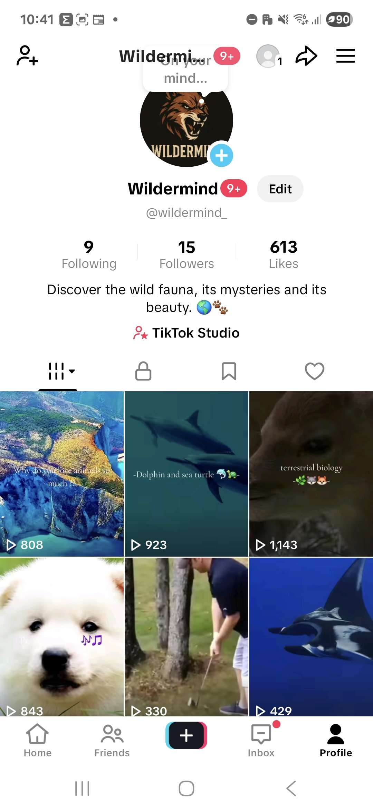
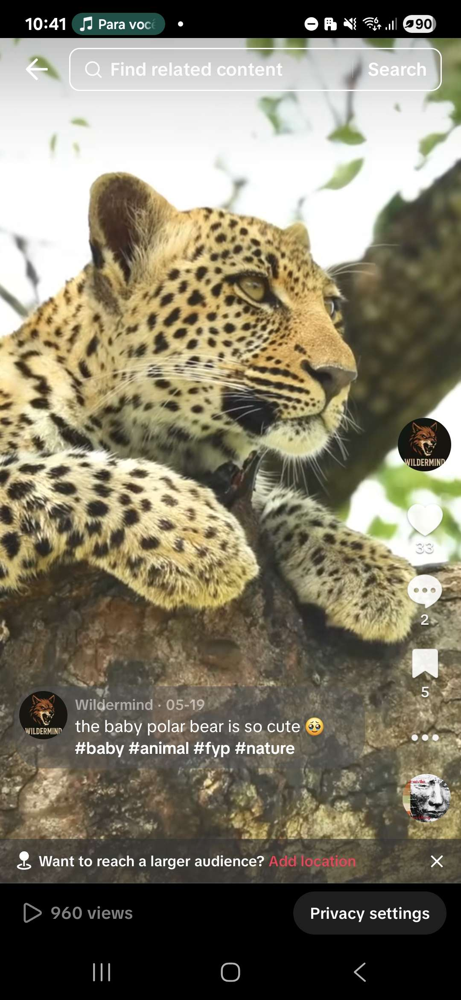
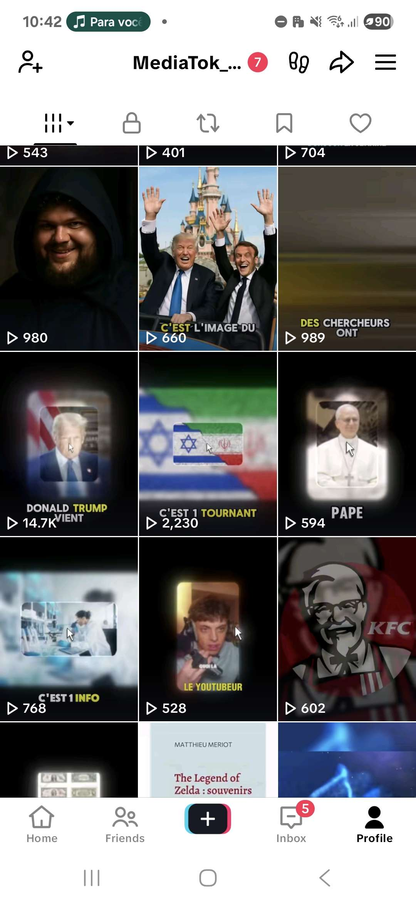

Projets sociaux
Les réseaux sociaux sont un terrain d’expérimentation : tester, ajuster, analyser les résultats et optimiser les contenus. J’ai lancé plusieurs comptes et projets TikTok, ce qui m’a permis de comprendre en profondeur les mécanismes de viralité et les stratégies d’engagement.
WilderMind : Faune sauvage
Compte TikTok dédié aux animaux sauvages, avec des vidéos immersives et éducatives. Objectif : informer et émerveiller le public en s’appuyant sur la curiosité naturelle des spectateurs.
Vidéos sous-marines en 4K
Format expérimental sur la vie sous-marine, filmée en 4K avec bande-son immersive. Chaque vidéo intègre un call-to-action discret pour maximiser l’engagement et l’interaction avec le public.
Histoires d’horreur & faits insolites
Exploration du format narratif avec voix IA pour raconter des histoires d’horreur et des faits insolites. Objectif : capter l’attention par le storytelling et optimiser la rétention du spectateur.
Compétences acquises
- Analyse et compréhension de l’algorithme TikTok et de ses leviers.
- Optimisation de la rétention par le montage et le rythme des vidéos.
- Création et adaptation de différents formats : immersif, narratif, éducatif.
- Intégration de CTA stratégiques pour renforcer l’engagement.
- Gestion de la régularité et du timing de publication.
- Identification de niches porteuses et adaptation du contenu aux audiences ciblées.